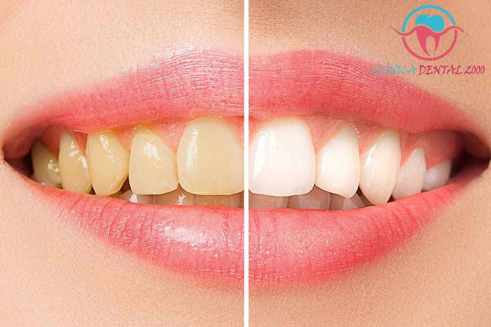

Servicios
Estética y Restauración
Resina simple
Se usa resina dental para reemplazar la parte cariada de un
diente o incluso una ausencia de la estructura.
$600
$600

Blanqueamiento
El blanqueamiento dental es un tratamiento cuyo objetivo es
aclarar el color de los dientes, eliminando las manchas y la
decoloración.
$5,000
$5,000
Carilla
Las carillas dentales son láminas delgadas que se colocan en
la parte frontal de los dientes. Su objetivo es mejorar la
apariencia del diente.
$10,000
$10,000
Cirugía dental
Extracción simple
Es lo que coloquialmente se conoce como quitar un diente.
$600
Cirugía de muela de juicio
Estos dientes son los ultimos en erupcionar y generan más
problemas que beneficios, ya que su salida puede empujar la dentadura
hacia adelante o generar caries debido a su posición y ubicación.
$5,000
$5,000
Extracciones complicadas
Son aquellas que presentan dificultades, lo que las hace más
complejas y requiere el uso de medios especiales.
$1,000
$1,000
Retenedores
Guardas
Los guardas dentales son cubiertas que se usan sobre los dientes y,
se usan para proteger los dientes de lesiones por rechinar los
dientes o durante los deportes.
$2,000
$2,000
Retenedor fijo
El retenedor fijo se emplea normalmente en aquellas situaciones en las que se prevé
una inestabilidad intraarticular y se ha planeado una retención prolongada.
$3,000
$3,000
Retenedor removible
Los retenedores removibles son una de las maneras mas efectivas para
mantener tus dientes después de un tratamiento de ortodoncia.
$4,000
$4,000


©2024. Derechos Reservados
Desarrollado por: Vania Karyme Carrera Reyes Matricula: 02112316 Grupo: 607
Plantel Nueva Tijuana